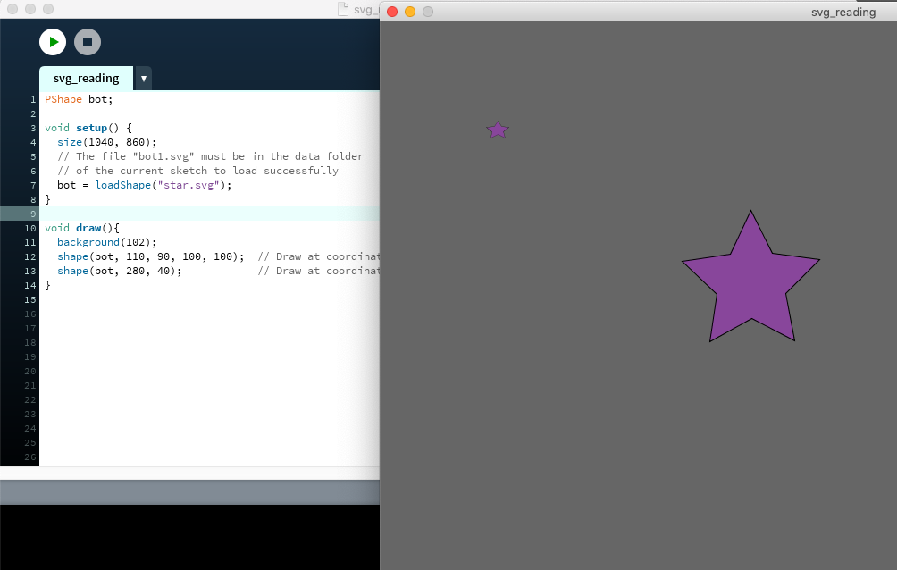
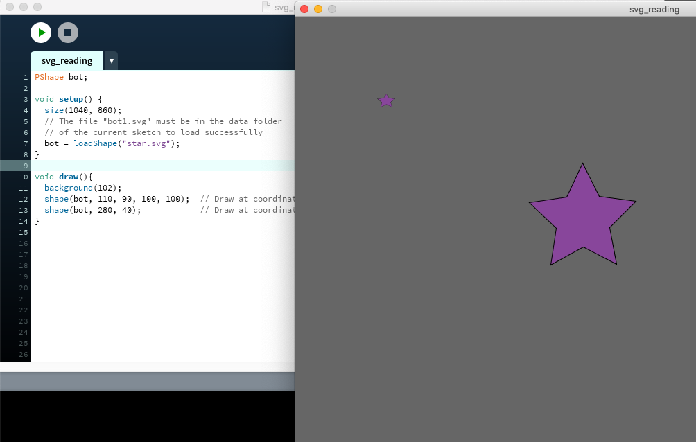

6.810 Engineering Interactive Technologies (fall 2020)
User Interfaces Made with Printed Electronics
In the next weeks, we are going to build a range of different physical user interfaces. Below, you see the basic pipeline we will cover before going into more advanced examples.
The pipeline consists of three steps:
- Fabricating the Sliders, Dials, and Multi-touch Pad (Printed Electronics)
- Wiring up the Electronics and Performing Signal Processing on the Inputs from the User (Arduino)
- Displaying the Result in a graphical user interface on screen (Processing)
We will cover each of these parts in a seperate tutorial, starting with Processing today.

Part 1: Creating the On-Screen UI with Processing
We will use graphical output generated by Processing a lot to help with debugging our user interfaces.
Today, we will show you how to create some graphical output with Processing and next week we will extend this work an interface Processing with Arduino to actually receive some signals from our fabricated user interface.
At the end of today, we want to have something that looks like this and that we can use in future weeks to visualize what is happening on our physical fabricated user interface:

Install Processing
You can download Processing for Windows, Mac, Linux here: https://processing.org/.
Once you downloaded it, you should see an IDE similar to the one Arduino uses.

Code Structure: setup() and draw()
Similar to Arduino, Processing works with two functions:
setup(): is only run once at the beginning
draw(): is run repeatedly similar to Arduino's loop() function
While the simple examples below do not require you to have this structure in place (i.e. you can simple type the code into the empty window, it is good practice to put the code for redrawing the window into draw() and the code that is only required once into setup()).
Create Touch Button in Processing
Processing allows us to quickly create user interfaces on screen.
Creating Geometry
Type the following into the Processing window to create a simple rectangle that can serve as a touch button later:
rect(40, 40, 30, 30); // rect(upperleft_x, upperleft_y, width, height)

Look at the Processing Reference here and make your rectangle have round corners like shown in the image below:

If you need it later, you can find the full reference here:
Changing Color of Button
Next, imagine we want to change this buttons color based on if it is touched or untouched.
To change the color of an object, you can use the fill() function.
fill(204, 102, 0); // fill(R, G, B), 0-255
rect(40, 40, 30, 30,7); // rect(upperleft_x, upperleft_y, width, height)

Changing Color Based on State
Do change a color based on state (e.g., pressed/not pressed), you can use a simple if/else statement.
String state = "pressed";
if (state == "pressed") {
fill(0, 0, 0);
} else if (state == "unpressed") {
fill(255, 255, 255);
} else {
fill(255, 0, 0);
}
rect(40, 40, 30, 30,7);
In the example above, when the String is pressed or unpressed, the button is either white or black, if some wrong input is given (i.e., any String other than those), the button is red to signal something went wrong.


Changing Color Based When Mouse Pressed
Rather than using a fixed state, you can also use mouse input to change the appearance of a button.
For this one, we finally need the setup() and draw() functions, since the mouseInput needs to be read continously and the button color needs to be redrawn every frame based on the input from the mouse.
void setup() {
size(480, 120);
}
void draw() {
if (mousePressed) {
fill(0);
} else {
fill(255);
}
rect(40, 40, 30, 30, 7);
}
Executing this code should give you a button that changes from black to white depending on if the mouse is pressed or not.
Changing Color When the Button is Clicked
As a final example, we want to only change the button color, when the button is clicked.
If the user clicks somewhere else on the screen, the button should keep its color.
We can do this by comparing if the mouse coordinates are within the buttons area.
int rectX = 40;
int rectY = 40;
int rectWidth = 30;
int rectHeight = 30;
void setup() {
size(480, 120);
}
void draw() {
if(mousePressed) {
if (mouseX > rectX && mouseX < rectX+rectWidth) {
if (mouseY > rectY && mouseY < rectY+rectHeight) {
fill(0);
}
} else {
fill(255);
}
rect(rectX, rectY, rectWidth, rectHeight, 7);
}
Wrapping Everything Up Into a Class
If we need more than one touch button, it becomes handy to make it its own class, so we can simply make multiple instances of this class rather than creating a huge variable mess.
You can read more about Objects and Classes in Processing here:
Your Task:
- Convert the functionality we have into a touch button class called TouchButton.
- We should be able to create a new touch button in Processings setup() function by first creating a variable, e.g.,
TouchButton touchButton1;
- and then creating the object with the constructor, for instance:
touchButton1 = new TouchButton(30,30,40,40, color(255,255,255), color(0,0,0)); whereas the attributes are (x-position, y-position, width, height, unpressed color, pressed color)
- Processings draw() function should then include a call to a TouchButton class function
touchButton1.changeColorIfPressed() to update the color if the mouse is pressed.
- if you want you can also put your TouchButton class into a separate file like shown below, simply create a new tab, save the class there and then call it from the main file
Check if your code works by creating a range of touch buttons on the screen of different sizes and with different positions and press/unpress colors.


Understanding Touch-Buttons, Sliders, Dials, Multi-Touch Pad
In the task for this week, we will ask you to extend the user interface we described above to display touch buttons, sliders, dials, and a multi-touch pad. Before you start coding, let's look at each element briefly.
Touch-Button
A touch button consists of one area shape with an outgoing wire.
For today, we assume a touch button is rectangular, but as you can see below it can have any shape.

Slider (aka multiple Touch-Buttons linearly arranged)
A slider works exactly like a touch button, just that it has a different sensing line for each slider segment.
Number of Segments: The number of slider segments determines its resolution, i.e. the more segment the slider has, the more discrete values it can sense. For instance, if you need a slider to select an audio volume in a range from 0-100 and you only have three slider segments, you may only get three values from the user input and thus you may decide to map them to 0, 50, 100 volume. However, if you had 10 slider segments, you can have more fine grained values, e.g. volume of 0, 10, 20, 30... etc.
Discrete vs. Continous Sliders: Imagine your finger sliding over the slider below with your finger being exactly the size of one slider segment. In the discrete slider, you would only touch one segment at a time. However, in the continous example, as your finger slides to the right, you touch two elements simultaenously since they slightly overlap. This allows the slider to have a higher resolution with fewer segments since we can use some smart processing to interpolate the interaction.

Here are a few examples of continous sliders:


Dials (aka multiple Touch-Buttons circularly arranged)
Everything we just say applies to dials as well, i.e. number of segments determines resolution and while the example below only shows a discrete dial, you can also create continous dials by using the same interleaving approach as described for the slider.

Multi-Touch Pad
The multi-touch pad works a little different. As you can see in the images below, there is only one line per row, i.e. multiple segments are connected together.


As you can see below, there are two sets of lines, one printed on one side of the sheet and the other printed on the other side of the sheet. The sheet is working as an insulator between both lines. One set of lines is always 'on', i.e. transmitting, while the other set of lines is off and listening to any changes to the signal that is transmitted by the other lines. A change, for instance, happens, when the user touches one of the lines. The change in the transmitted signal that the receiving lines get then indicates where on the line the user touched. We will tell you more about it once we reach the electronics parts of this lab.

Your Task
Your task for the remaining time today and as homework is to prepare a user interface in Processing that mirrors the physical user interface elements that we will build next week.
You can see an image of what you need to build below.
Your user interface should display on the screen:
- a touch button
- a slider
- a multi-touch pad
Your user interface should also be able to scale the slider and multi-touch pad to have different number of segments.
Thus, when the designer needs a slider of resolution 5, the slider should have 5 segments with individual states.
Show that you can change the color of each segment by clicking on it.
When you are done upload your code to Gradebook and attach a short screencast video showing your UI.
Implementation
- You already have the TouchButton class.
- Remember, a slider is just a list of TouchButtons, so when you create the class TouchSlider it makes sense to define it as an ArrayList of TouchButtons, read more about ArrayLists here: https://processing.org/reference/ArrayList.html
- You can think of a multitouch pad as just a list of TouchSliders, so when you create the class MultiTouchPad it makes sense to define is as an ArrayList of TouchSliders.
- Label each Element with its Name, you can find more info on Displaying Text here https://processing.org/tutorials/text/ and more info on Typography here https://processing.org/tutorials/typography/
- (may be too difficult) For the dial, you may want to use the same approach as for the TouchSlider, i.e. use an ArrayList of Touch Buttons, but on top of that you also need more advanced drawing capabilities, we recommend you use arc to define the dial segments https://processing.org/tutorials/curves/
Extra: Dial
This code allows you to import an svg file directly into Processing.
If you create your SVG file in Illustrator, make sure you change the following export option: When you save the svg 1) choose "More Options" in the SVG Options dialog, and then 2) select the "Style Attributes" in the drop CSS Properties drop down to make it compatible with Processing.
PShape bot;
void setup() {
size(1040, 860);
// The file "bot1.svg" must be in the data folder
// of the current sketch to load successfully
bot = loadShape("star.svg");
}
void draw(){
background(102);
shape(bot, 110, 90, 100, 100); // Draw at coordinate (110, 90) at size 100 x 100
shape(bot, 280, 40); // Draw at coordinate (280, 40) at the default size
}
 

Collision Detection
All possible ways are described here http://jeffreythompson.org/collision-detection/table_of_contents.php.
We provide you with a code file that handles for you the point (mouse cursor) and polygon (shape) detection.
You can read more about it here http://jeffreythompson.org/collision-detection/poly-point.php
rect(40, 40, 30, 30,7); // rect(upperleft_x, upperleft_y, width, height)
if (state == "pressed") {
fill(0, 0, 0);
} else if (state == "unpressed") {
fill(255, 255, 255);
} else {
fill(255, 0, 0);
}
rect(40, 40, 30, 30,7);
size(480, 120);
}
void draw() {
if (mousePressed) {
fill(0);
} else {
fill(255);
}
rect(40, 40, 30, 30, 7);
}
int rectY = 40;
int rectWidth = 30;
int rectHeight = 30;
void setup() {
size(480, 120);
}
void draw() {
if(mousePressed) {
if (mouseX > rectX && mouseX < rectX+rectWidth) {
if (mouseY > rectY && mouseY < rectY+rectHeight) {
fill(0);
}
} else {
fill(255);
}
rect(rectX, rectY, rectWidth, rectHeight, 7);
}
TouchButton touchButton1;touchButton1 = new TouchButton(30,30,40,40, color(255,255,255), color(0,0,0)); whereas the attributes are (x-position, y-position, width, height, unpressed color, pressed color)touchButton1.changeColorIfPressed() to update the color if the mouse is pressed.void setup() {
size(1040, 860);
// The file "bot1.svg" must be in the data folder
// of the current sketch to load successfully
bot = loadShape("star.svg");
}
void draw(){
background(102);
shape(bot, 110, 90, 100, 100); // Draw at coordinate (110, 90) at size 100 x 100
shape(bot, 280, 40); // Draw at coordinate (280, 40) at the default size
}